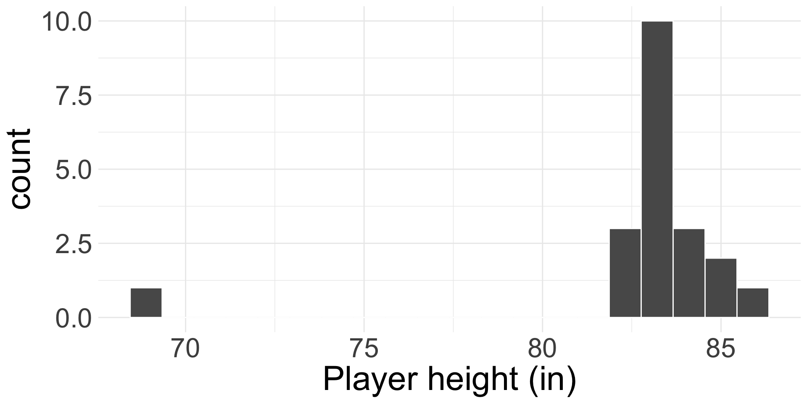
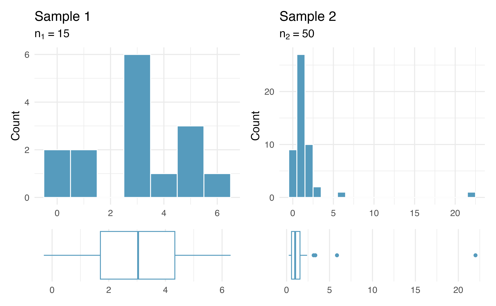
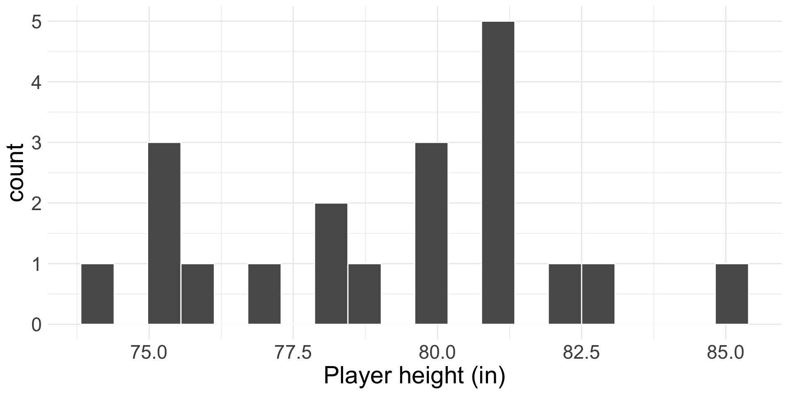
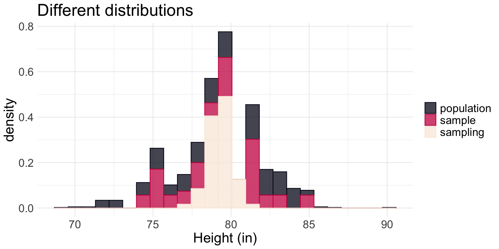
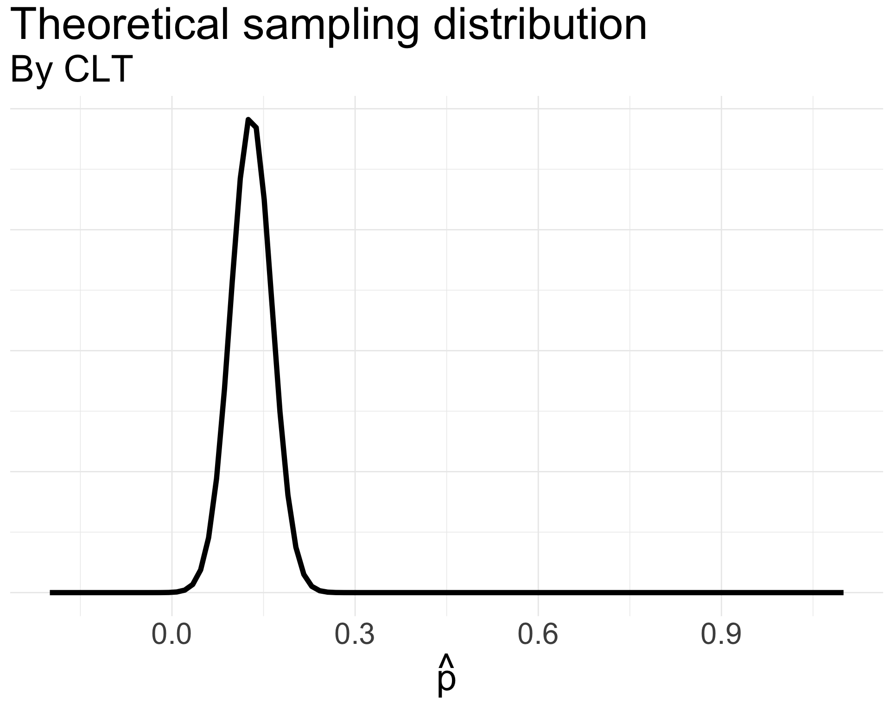
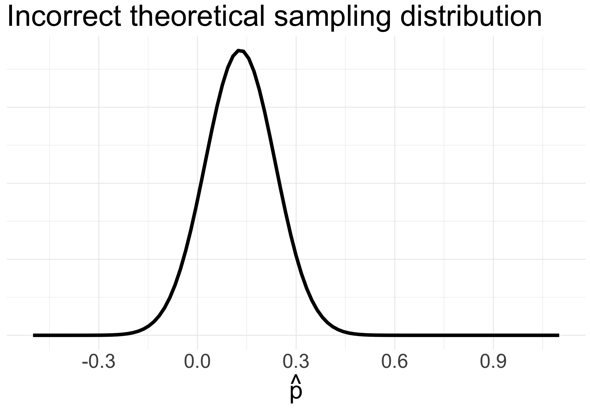
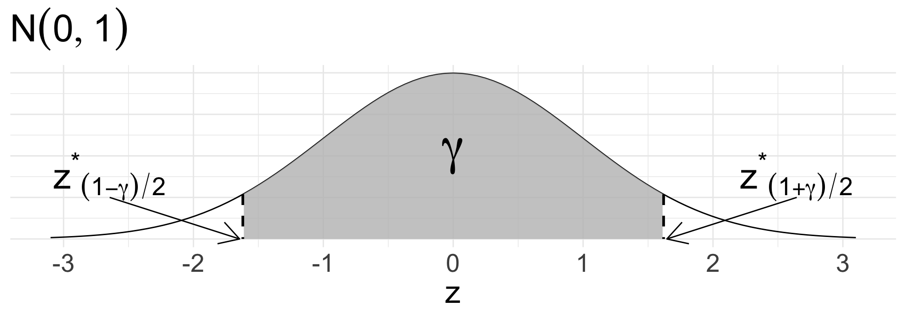

2025-10-29
Final project groups by tomorrow morning!
Dessert social
Normal distribution: symmetric, bell-shaped curve that is described by mean \(\mu\) and standard deviation \(\sigma\)
Use area under the Normal curve to obtain probabilities
68-95-99.7 rule
z-score standardizes observations to allow for easier comparison: \(z = \frac{x- \mu}{\sigma}\)
We are going to learn one of the BIGGEST theorems in Statistics
Uses the Normal distribution, and will be immensely helpful for inference tasks of confidence intervals and hypothesis testing
Assume that you have a sufficiently large sample of \(n\) independent values \(x_{1},\ldots, x_{n}\) from a population with mean \(\mu\) and standard deviation \(\sigma\).
Then the distribution of sample means is approximately Normal:
\[ \bar{X} \overset{\cdot}{\sim} N\left(\mu, \frac{\sigma}{\sqrt{n}}\right) \]
Independent samples:
Normality condition:
If \(n\) is small \((n < 30)\): if there are no clear outliers, we assume data are approximately normal
If \(n\) is larger \((30 \leq n < ?)\): if there are no particularly extreme outliers, we assume data are approximately normal
If any of these aren’t met, then we cannot use CLT
Do you believe the normality condition is satisfied in the following two samples?

Sample 1: small \(n < 30\). But histogram and boxplot reveals no clear outliers, so I would say normality condition is met.
Sample 2: larger \(n \geq 30\). Even though \(n\) is larger, there is a particularly extreme outlier, so I would say normality condition is not met.
Let’s see it again: If the assumptions of independence and Normality condition apply, then
\[\bar{X} \overset{\cdot}{\sim} N\left(\mu, \frac{\sigma}{\sqrt{n}} \right)\] where \(\mu\) and \(\sigma\) are the population mean and standard deviation, and \(\bar{X}\) is the sample mean obtained from a sample of size \(n\).
The average height of all NBA players in the 2008-9 season is 79.21 inches, with a population standard deviation of 3.57 inches. We randomly sampled 20 of these players and recorded their heights, as shown below.

What is the sampling distribution of the sample mean heights? Do we know it exactly?
We don’t know if the data are Normal. But:

Note: \(y\)-axis is density (how likely each \(x\) value is from the given distribution).

What do you notice about how the three distributions compare? Are some distributions very similar? Are some very different? Why do you think this is?
Customers are standing in line at a bank.
Let \(X_{i}\) represent the service time for customer \(i\).
Suppose that the average service time for all customers is 5 minutes, with a standard deviation of 6 minutes.
R code to obtain this probability.We want \(\text{Pr}(\bar{X} < 4)\)
Conditions for CLT met: independence (random sample) and sufficiently large sample size \((n=36)\).
Using 68-95-99.7 rule, probability that the average service time of all these customers is less than 4 minutes is about \(1 - (0.34 + 0.5) = 0.16\)
pnorm(4, 5, 1) = 0.159Remember: a proportion can be viewed as a mean! So the CLT will apply to proportions as well!
Suppose we have some true population proportion \(p\). If we take a sample of size \(n\) from the population, then the CLT tells us that sampling distribution of \(\hat{p}\) is approximately Normal if we have:
Independence
“Success-failure” condition: \(np \geq 10\) and \(n(1-p) \geq 10\)
If these two conditions hold, then by CLT:
\[ \hat{p} \overset{\cdot}{\sim} N\left(p, \sqrt{\frac{p(1-p)}{n}}\right) \]
Mars, Inc. is the company that makes M&M’s. In 2008, Mars changed their color distribution to have 13% red candies.
Let \(\hat{p}\) represent the proportion of red M&M’s in a random sample of \(n\) M&M’s. What is the sampling distribution of \(\hat{p}\) if we take a random sample of sizes:
\(n = 100\), vs.
\(n = 10\)
If \(n= 100\):
\(np = 100(0.13) = 13 \geq 10\)
\(n(1-p) = 100(0.87) = 87 \geq 10\)
So CLT applies!
\[ \begin{align*} \hat{p} &\overset{\cdot}{\sim} N\left(0.13, \sqrt{\frac{0.13(1-0.13)}{100}}\right) \\ &= N(0.13, 0.034 ) \end{align*} \]

If we incorrectly applied CLT, we might think \[\begin{align*} \hat{p} &\overset{\cdot}{\sim} N\left(0.13, \sqrt{\frac{0.13(1-0.13)}{10}}\right) \\ &= N(0.13, 0.106 ) \end{align*}\]
What does this distribution look like?
Why is this scary??

Allows statisticians safely assume that the mean’s sampling distribution is approximately Normal. The Normal distribution has nice properties and is easy to work with.
Can be applied to both continuous and discrete numeric data!
Does not depend on the underlying distribution of the data.
For many of these reasons, we can use the CLT for inference!
NOTE: we might not know what \(\mu\) or \(p\) actually are, but CLT tells us that the sampling distributions of \(\bar{X}\) and \(\hat{p}\) are centered at their theoretical values!
The CLT gives us the sampling distribution of a sample mean “for free” (assuming conditions are met)
Formula for a (symmetric) \(\gamma \times 100\%\) confidence interval:
\[ \text{point estimate} \pm \color{blue}{\text{critical value} \times \text{SE}} \equiv \text{point estimate} \pm \color{blue}{\text{Margin of Error}} \]
point estimate: the “best guess” statistic from our observed data (e.g. \(\hat{p}_{obs}\) and \(\bar{x}_{obs}\))
SE: standard error of the statistic (comes from CLT)
critical value: percentile that guarantees the \(\gamma\times 100\). This will vary depending on your data/assumptions
Suppose that I have a sample of \(n\) binary values. Using the sample, I want a \(\gamma \times 100\%\) confidence interval for the probability of success \(p\).
If assumptions of CLT for sample proportions hold, then we know
\[ \hat{p} \overset{\cdot}{\sim} N\left(p, \sqrt{\frac{p(1-p)}{n}}\right) \]
How do we know if success-failure condition holds without knowing \(p\)?
Let’s use our best guess: \(\hat{p}_{obs}\)
Success-failure condition for confidence intervals: \(n\hat{p}_{obs} \geq 10\) and \(n(1-\hat{p}_{obs}) \geq 10\)
We can use/manipulate the CLT result to obtain a confidence interval for \(p\)!
Point estimate: \(\hat{p}_{obs}\)
Standard error: \(SE = \sqrt{\frac{p(1-p)}{n}}\)
But we still don’t have \(p\)!
Instead, use the following approximation for CI:
\[\widehat{\text{SE}} \approx \sqrt{\frac{\hat{p}_{obs}(1-\hat{p}_{obs})}{n}}\]
Critical value: to obtain the middle \(\gamma \times 100\%\), use the \(\frac{1-\gamma}{2}\) and \(\frac{1+\gamma}{2}\) percentiles of the \(N(0,1)\) distribution
\(z_{(1-\gamma)/2}^{*}\) (lower bound) and \(z_{(1+\gamma)/2}^{*}\) (upper bound)
Note: \(z_{(1+\gamma)/2}^{*} = - z_{(1-\gamma)/2}^{*}\)

So the formula for a (symmetric) \(\gamma\times 100\%\) CI for \(p\) is:
\[ \hat{p}_{obs} \pm z_{(1+\gamma)/2}^{*}\times \sqrt{\frac{\hat{p}_{obs}(1-\hat{p}_{obs})}{n}} \]where the critical value \(z^{*}_{(1+\gamma)/2}\) is obtained from \(N(0,1)\) distribution.
NOTE: we could have obtained the CI directly from the sampling distribution of \(\hat{p}\). However, the critical value of \(z_{(1+\gamma)/2}^{*}\sim N(0,1)\) is very general. Does not depend on the specific data you have!
A poll of 100 randomly sampled registered voters in a town was conducted, asking voters if they support legalized marijuana. It was found that 60% of respondents were in support.
What is the population parameter? What is the (observed) point estimate/statistic?
Find a (symmetric) 90% confidence interval for the true proportion of town residents in favor of legalized marijuana.
Conditions met?
Independence: random sample
Success-failure condition: \(n\hat{p}_{obs} =100(0.6) = 60 \geq 10\) and \(n(1-\hat{p}_{obs}) = 100(0.4) = 40 \geq 10\)
Find 90% CI for proportion of town residents in favor of legalized marijuana.
Gathering components for CI:
Point estimate: \(\hat{p}_{obs}\) = 0.6
Standard error: \(\widehat{SE} = \sqrt{\frac{0.6(0.4)}{100}} \approx 0.049\)
Critical value: what percentiles do we want?
qnorm(0.95, mean = 0, sd = 1) \(\approx 1.645\)So our 90% confidence interval for \(p\) is:
\[ \hat{p}_{obs} \pm z^{*}_{0.95} \widehat{SE} = 0.6 \pm 1.645(0.049) = (0.519, 0.681) \]
Interpret the confidence interval in context!
What is the main takeaway of the CLT?
What are the assumptions of the CLT?
What is the Normal approximation for CLT?
How do we construct a \(\gamma \times 100\%\) confidence interval using a mathematical model?